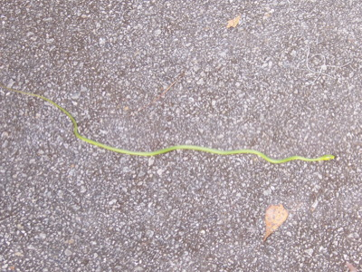
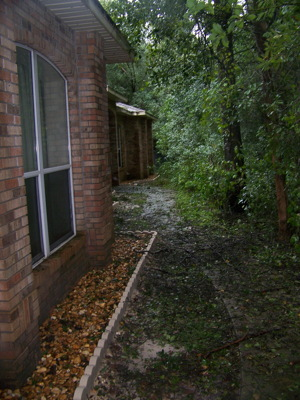

2016 Holiday Web Page

| Erich and Margie's 2016 Holiday Web Page | |
January On New Year's Eve, we challenged each other to a 2016 prediction quiz. Margie and Gamble checked in on a gopher tortoise in his tunnel several times. Erich decided to give up desserts for 6 months. We went to see ragtime pianist Bob Milne with Missy. Margie joined the 21st century by buying a phone that takes pictures. Erich remains in the 19th century by not owning a cell phone. We saw the Wyndbreakers and Magda Hiller at the New Smyrna Art Festival. Margie made the Daytona Beach News-Journal, in an article about Lawrence Lessig. Erich's odometer finally exceeded his ZIP code. Margie went to see Arlo Guthrie with some friends. Erich recommends the manga series "Death Note". Margie recommends the book "The Drunkard's Walk".
February We did what we always do on Groundhog Day. The following weekend we took Gamble to his first dog parade, attended Barb's annual Chinese New Year celebration, and Erich's team lost the Super Bowl. Erich watched five Woody Allen films he hadn't seen before. Our second-favorite Mexican restaurant closed. Two of Erich's students were involved in a near-fatal motorcycle accident, and had to withdraw from classes. We took a trip St. Augustine to hear Caleb Joy, Vinny Jacobs, Dewey Via, and Amy Hendrickson. In a "small world" moment, at lunch that day our hostess was one of Guen's nieces! Erich recommends the TV show "iZombie". Margie recommends getting a massage.
March Erich went with the gang to hear Indian and Pakistani music in a free outdoor concert. We went with Michael to see Brian Smalley play in Mount Dora. Michael also accompanied us for lunch to meet Rick Mabry, a visitor to the math department some years back. Erich had lunch with Erin and her friends, who were vacationing in Orlando for a week. We both got sick the same week. Erich spent Easter weekend visiting his friend Barbara in Arkansas. They hiked, visited a state park in Oklahoma, cooked, visited the first Walmart, watched movies, and Erich barely made it home after his flight was cancelled. Erich recommends never using Allegiant Airlines. Margie recommends Flame Thrower cinnamon whiskey.
April Margie started Medicare. Erich did his taxes later than ever. We saw Magda Hiller again. We attended a living room concert at the Branton's to see The Cook Trio. Neither of us won our annual mini-golf tournament, though we were both close. We attended the Gamble Rogers Folk Festival, and listened to over 20 different musical acts, including some old favorites (Sam Pacetti, Brian Smalley, Dewey Via) and some new discoveries (Passerine, Grant Peoples, Patchoulli). Erich recommends spending finals weekend in St. Augustine. Margie recommends seeing more live music.
May Among two sections of Erich's Intro Stat, the student getting the high score on the final exam was 13 years old. We held a games party at the newly relocated Elusive Grape. David Whittaker, who taught math at Stetson a long time ago, stopped by to see us. We saw Mark Hodgson play at a free concert, and saw an armadillo on the way home. Erich won a prize at Michael Branton's retirement trivia. Margie beat Erich at spelling the National Spelling Bee words. Erich got his first email from the UAE. After a 25-29 season, the Stetson Hatters won the A-Sun Conference Baseball Championship. Erich recommends the Vietnamese sandwich shop in Orange City, which closed 6 months later. Margie mourned the passing of Guy Clark and recommends his first album, Old No. 1.
June We played games to celebrate Missy's birthday. We did our first road rally, and missed half the checkpoints. We went to Palm Coast to see Chelsea Saddler and Brian Smalley play. Erich won his first on-line chess tournament. Erich started playing tennis again. We tried trivia at the Abbey. Erich recommends the reboot of "Battlestar Galactica". Margie recommends the TV mini-series The Greeks.
July Erich lost a total of 2 pounds in 6 months, so he started exercising daily and eating dessert again. Erich found a skink in the house, and Gamble tried to eat it. At an Indian restaurant, we heard another table ask for chips and salsa. We saw 125 years of country rock history by seeing Pure Prairie League, Poco, and Firefall in concert. We also saw Magda Hiller in a "house" concert. And we saw Brian Smalley perform in Port Orange. Erich recommends the manga series "Saga". Margie recommends the TV series "Life".
August Erich gave up daily exercise. We attended Regina's 60th birthday party. Erich moved back into his office at school after getting new carpet. For the first time, Erich drank an entire bottle of wine, without throwing up. Margie did some spider web removal. Erich recommends a Kendama puzzle. Margie recommends the TV series "The Good Guys".
September We went to see Brian Smalley again in Mount Dora. We beautified the front of our house with 4 cubic yards of fill dirt, 2 tons of rocks, and concrete edgers. Erich recommends the TV series "Hell on Wheels". Margie recommends pumpkin shakes.
October We saw a Guam license plate. 5.5 days of classes were canceled as Hurricane Matthew visited. We lost power for 3.5 days. Erich got a request from a student for partial credit on a problem the student left completely BLANK. We went to see Magda Hiller play at Deland's water festival. Erich hosted a debate party. Erich got a filling done without Novocain. We attended the department Fall picnic, where Margie saw a snake, and the faculty destroyed the students in volleyball. We saw a Virgin Islands license plate. Erich's classes dressed up for Halloween, which you can see here. Erich recommends the new TV show "This is Us". Margie recommends not making a year-long commitment to think of monthly things to recommend.
November We celebrated the 5th anniversary of getting Gamble. Erin and Tom visited for the day, and we enjoyed the Sugar Mill, Thai food, and trivia at the Grape. We saw Brian Smalley yet again in Mount Dora. On election night, Erich threw the worst victory party ever for Hillary Clinton. Volume One of Erich's puzzle book (with a dozen coauthors) came out. We went to the Deland Art Festival, where we saw Ben Prestage perform. We hosted Thanksgiving dinner with Missy and Barb. Our favorite Mexican restaurant closed too. The gopher tortoise tunnel was caved in. Erich recommends selling stock before the Trumpocalypse. Margie recommends the TV series "The Grinder".
December Our garage door spring snapped, making our garage inaccessible for a week. Erich was passed in his car by Santa on his sleigh. We attended a pot-luck at Miguel and Regina's to see their Croatia vacation pictures. Erich had been going to Taco Bell for breakfast so regularly, the cashier knew his order before he gave it. Gamble barked repeatedly at a picture of Margie on the wall. Margie received band-aids from her health insurance provider. We went to St. Augustine to listen to Dewey Via, Jesse Evans, and Amy Hendrickson, but alas the restaurant Amy was playing at was a 90-minute wait. On the interstate to St. Augustine, we were the middle car in a stop-and-go accident sandwich, but there was no damage to any of the cars, and no one was hurt. We hosted our annual winter solstice party. We went to the beach on Christmas morning to take Gamble for a rainy romp. The gopher tortoise tunnel is occupied again! Erich edged out Margie 7-6 in the 2016 prediction quiz. We will have some friends over for a subdued New Year's Eve celebration. Erich recommends the Netflix series "Travelers", after binging the entire first season in one day. Erich's list of humorous things he heard football announcers say this year is here. Margie recommends the music documentary "Heartworn Highways".

 